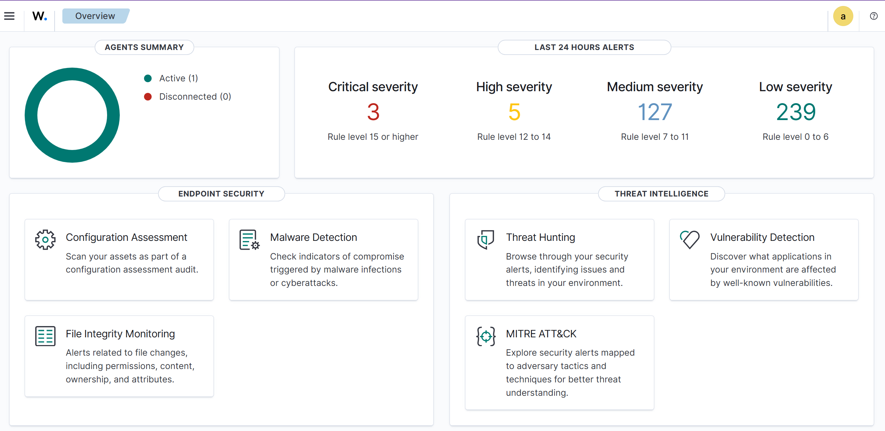
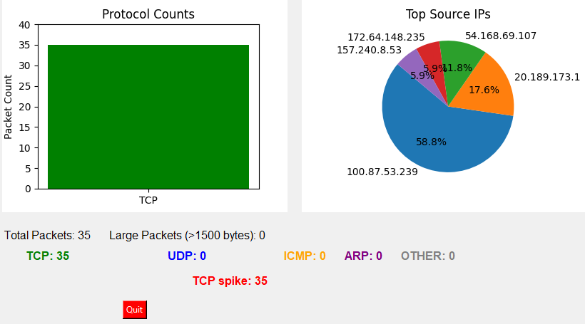
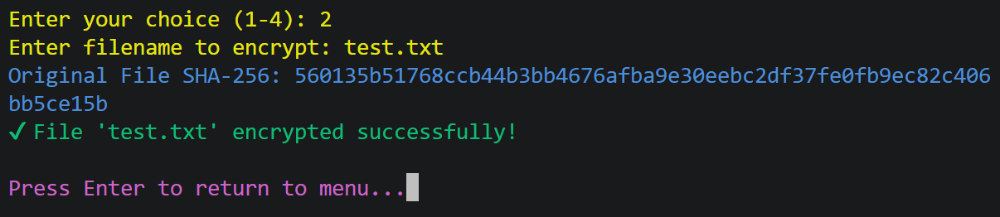

CYBERSECURITY PORTFOLIO
Cybersecurity postgraduate at RMIT University with hands-on experience in SIEM monitoring, threat hunting, and penetration testing. Security Lead for a six-sprint penetration-testing engagement, with practical experience in security assessment, risk management, and incident investigation.
ABOUT ME
I am a Master of Cyber Security candidate at RMIT University with practical experience in security monitoring, threat hunting, network traffic analysis, and web application penetration testing.
As Security Lead and Test Coordinator for the Dronexchange marketplace penetration test, I led the security workstream of a five-person team, coordinated testing across six sprints, maintained the risk register, and contributed to the final report and remediation roadmap. My technical projects also include a Wazuh and Sysmon SIEM homelab for detection and investigation of security events.
Security Findings Reported
Team Members Led
Cybersecurity Credentials and Training
Master of Cybersecurity
PROJECTS
PENETRATION TESTING
Led security coordination for a five-person team conducting a six-sprint penetration test of a drone marketplace. Managed scope, rules of engagement, and risk tracking, personally reported findings through GitHub Issues, and contributed to a final report covering 18 findings, including one critical issue.

SIEM Lab
Built a Wazuh and Sysmon SIEM homelab across Windows 11, Ubuntu Server, and Kali Linux to collect and analyse endpoint telemetry, investigate security alerts, and validate six detection scenarios mapped to MITRE ATT&CK techniques. Practised alert triage, suspicious activity investigation, and false-positive analysis.

NETWORK SECURITY
Developed a Python-based network traffic analyzer using Scapy to capture and inspect live packets, filter traffic by protocol, and investigate network activity. Built a Tkinter and Matplotlib GUI for traffic visualisation and implemented CSV logging to support further analysis.

DATA SECURITY
Developed a Python-based file encryption tool to protect sensitive files using cryptographic encryption and verify file integrity with SHA-256 hashing. The project demonstrates practical data protection, encryption, and integrity-checking concepts.
SECURE HEALTHCARE PLATFORM
Collaborated on a healthcare portal designed to support patient interactions and appointment scheduling. Contributed to the platform's front-end development, focusing on usability, structured workflows, and role-based access considerations.
SKILLS
EXPERIENCE
RMIT University × Timed Automation Solutions
CERTIFICATIONS
ISC2
Coursera
Forage
Forage